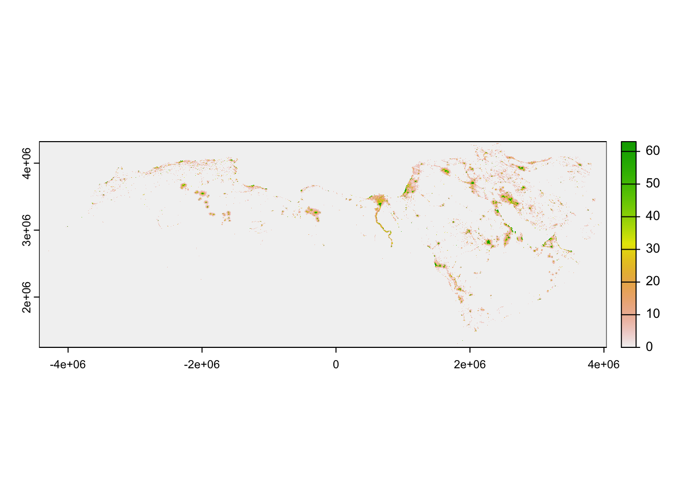
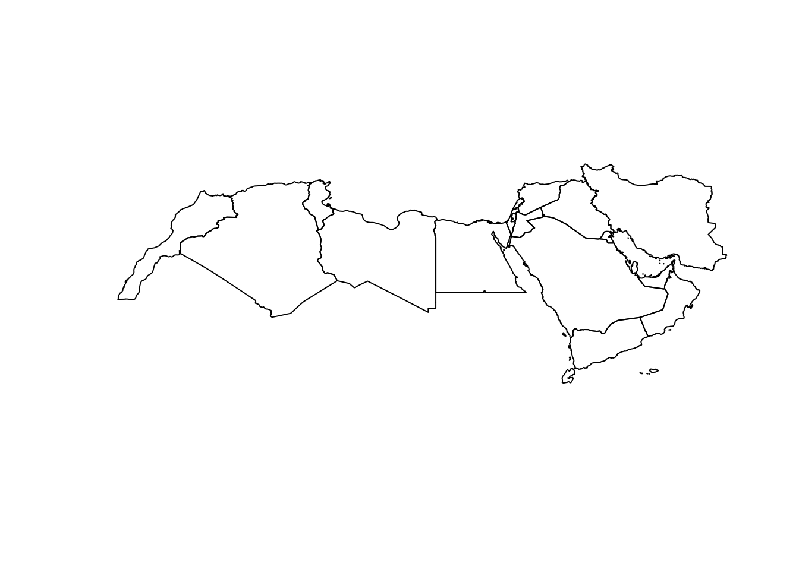
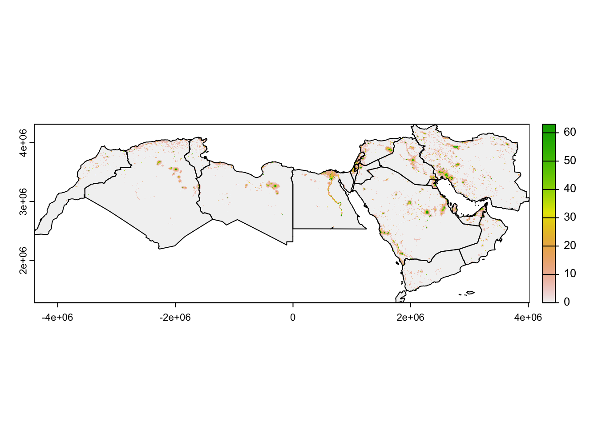
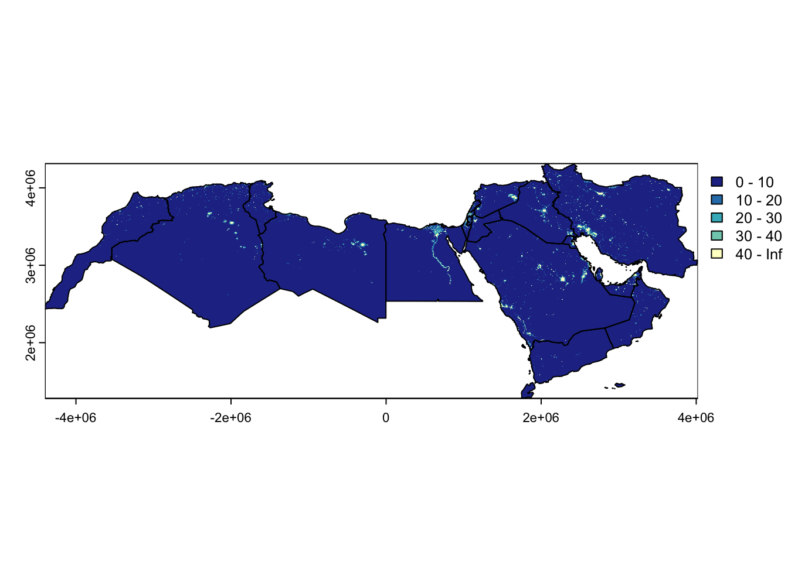
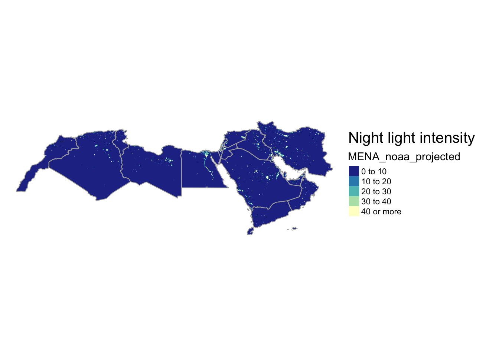
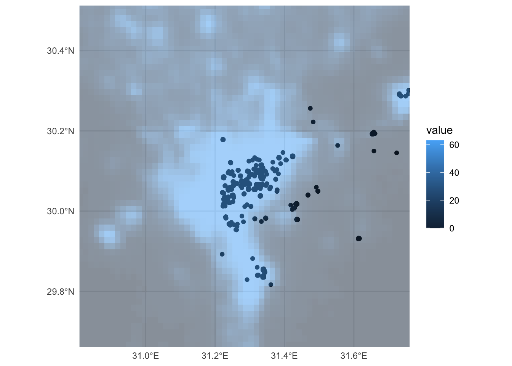
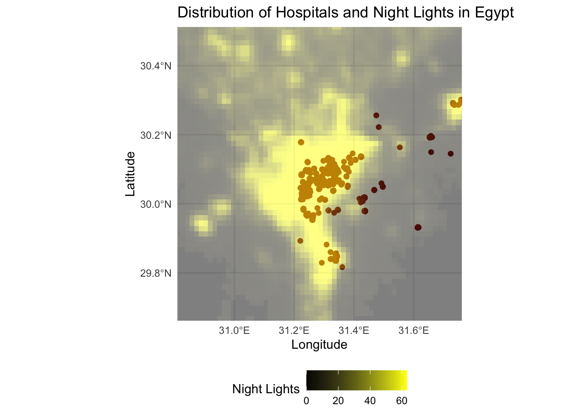

MENA_lights <- rast("data/MENA_noaa_projected.tif")Lab 1
We will start by exploring raster data processing and choropleths we can make from it. Raster data, consisting of gridded cells, allows us to represent continuous geographic phenomena such as temperature, elevation, or satellite imagery. Choropleths, on the other hand, are an effective way to visualize spatial patterns through the use of color-coded regions, making them invaluable for displaying discrete data like population density or election results. By combining these techniques, we will gain a comprehensive toolkit for conveying complex geographical information in a visually compelling manner.
NOAA Night Lights data
Import raster data
Plot it.
plot(MENA_lights) 
Have a look at the CRS.
crs(MENA_lights)[1] "PROJCRS[\"Africa_Albers_Equal_Area_Conic\",\n BASEGEOGCRS[\"WGS 84\",\n DATUM[\"World Geodetic System 1984\",\n ELLIPSOID[\"WGS 84\",6378137,298.257223563,\n LENGTHUNIT[\"metre\",1]]],\n PRIMEM[\"Greenwich\",0,\n ANGLEUNIT[\"degree\",0.0174532925199433]],\n ID[\"EPSG\",4326]],\n CONVERSION[\"Albers Equal Area\",\n METHOD[\"Albers Equal Area\",\n ID[\"EPSG\",9822]],\n PARAMETER[\"Latitude of false origin\",0,\n ANGLEUNIT[\"degree\",0.0174532925199433],\n ID[\"EPSG\",8821]],\n PARAMETER[\"Longitude of false origin\",25,\n ANGLEUNIT[\"degree\",0.0174532925199433],\n ID[\"EPSG\",8822]],\n PARAMETER[\"Latitude of 1st standard parallel\",20,\n ANGLEUNIT[\"degree\",0.0174532925199433],\n ID[\"EPSG\",8823]],\n PARAMETER[\"Latitude of 2nd standard parallel\",-23,\n ANGLEUNIT[\"degree\",0.0174532925199433],\n ID[\"EPSG\",8824]],\n PARAMETER[\"Easting at false origin\",0,\n LENGTHUNIT[\"metre\",1],\n ID[\"EPSG\",8826]],\n PARAMETER[\"Northing at false origin\",0,\n LENGTHUNIT[\"metre\",1],\n ID[\"EPSG\",8827]]],\n CS[Cartesian,2],\n AXIS[\"easting\",east,\n ORDER[1],\n LENGTHUNIT[\"metre\",1,\n ID[\"EPSG\",9001]]],\n AXIS[\"northing\",north,\n ORDER[2],\n LENGTHUNIT[\"metre\",1,\n ID[\"EPSG\",9001]]]]"Import the MENA shapefile
Import the Middle East and North Africa (MENA) shapefile, plot it, and verify its Coordinate Reference System (CRS). Is it the same as the raster’s CRS?
MENA_adm1 <- read_sf("data/MENA_projected.shp")
plot(MENA_adm1$geometry)
crs(MENA_adm1)[1] "PROJCRS[\"Africa_Albers_Equal_Area_Conic\",\n BASEGEOGCRS[\"WGS 84\",\n ENSEMBLE[\"World Geodetic System 1984 ensemble\",\n MEMBER[\"World Geodetic System 1984 (Transit)\"],\n MEMBER[\"World Geodetic System 1984 (G730)\"],\n MEMBER[\"World Geodetic System 1984 (G873)\"],\n MEMBER[\"World Geodetic System 1984 (G1150)\"],\n MEMBER[\"World Geodetic System 1984 (G1674)\"],\n MEMBER[\"World Geodetic System 1984 (G1762)\"],\n MEMBER[\"World Geodetic System 1984 (G2139)\"],\n ELLIPSOID[\"WGS 84\",6378137,298.257223563,\n LENGTHUNIT[\"metre\",1]],\n ENSEMBLEACCURACY[2.0]],\n PRIMEM[\"Greenwich\",0,\n ANGLEUNIT[\"degree\",0.0174532925199433]],\n ID[\"EPSG\",4326]],\n CONVERSION[\"Africa_Albers_Equal_Area_Conic\",\n METHOD[\"Albers Equal Area\",\n ID[\"EPSG\",9822]],\n PARAMETER[\"Latitude of false origin\",0,\n ANGLEUNIT[\"degree\",0.0174532925199433],\n ID[\"EPSG\",8821]],\n PARAMETER[\"Longitude of false origin\",25,\n ANGLEUNIT[\"degree\",0.0174532925199433],\n ID[\"EPSG\",8822]],\n PARAMETER[\"Latitude of 1st standard parallel\",20,\n ANGLEUNIT[\"degree\",0.0174532925199433],\n ID[\"EPSG\",8823]],\n PARAMETER[\"Latitude of 2nd standard parallel\",-23,\n ANGLEUNIT[\"degree\",0.0174532925199433],\n ID[\"EPSG\",8824]],\n PARAMETER[\"Easting at false origin\",0,\n LENGTHUNIT[\"metre\",1],\n ID[\"EPSG\",8826]],\n PARAMETER[\"Northing at false origin\",0,\n LENGTHUNIT[\"metre\",1],\n ID[\"EPSG\",8827]]],\n CS[Cartesian,2],\n AXIS[\"(E)\",east,\n ORDER[1],\n LENGTHUNIT[\"metre\",1]],\n AXIS[\"(N)\",north,\n ORDER[2],\n LENGTHUNIT[\"metre\",1]],\n USAGE[\n SCOPE[\"Not known.\"],\n AREA[\"Africa\"],\n BBOX[-35,-25,39,55]],\n ID[\"ESRI\",102022]]"Reproject the Raster
As we are using both the raster and terra packages to handle the raster data it is useful to write terra:: or raster:: in front of the function we are using.
We use the terra project() function, we need to define two things:
- The object we want to reproject and
- The CRS that we want to reproject it to.
MENA_lights <- terra::project(MENA_lights, crs(MENA_adm1)) # reporjectig the raster data to the crs of the MENA shapefile
crs(MENA_lights)[1] "PROJCRS[\"Africa_Albers_Equal_Area_Conic\",\n BASEGEOGCRS[\"WGS 84\",\n ENSEMBLE[\"World Geodetic System 1984 ensemble\",\n MEMBER[\"World Geodetic System 1984 (Transit)\"],\n MEMBER[\"World Geodetic System 1984 (G730)\"],\n MEMBER[\"World Geodetic System 1984 (G873)\"],\n MEMBER[\"World Geodetic System 1984 (G1150)\"],\n MEMBER[\"World Geodetic System 1984 (G1674)\"],\n MEMBER[\"World Geodetic System 1984 (G1762)\"],\n MEMBER[\"World Geodetic System 1984 (G2139)\"],\n ELLIPSOID[\"WGS 84\",6378137,298.257223563,\n LENGTHUNIT[\"metre\",1]],\n ENSEMBLEACCURACY[2.0]],\n PRIMEM[\"Greenwich\",0,\n ANGLEUNIT[\"degree\",0.0174532925199433]],\n ID[\"EPSG\",4326]],\n CONVERSION[\"Africa_Albers_Equal_Area_Conic\",\n METHOD[\"Albers Equal Area\",\n ID[\"EPSG\",9822]],\n PARAMETER[\"Latitude of false origin\",0,\n ANGLEUNIT[\"degree\",0.0174532925199433],\n ID[\"EPSG\",8821]],\n PARAMETER[\"Longitude of false origin\",25,\n ANGLEUNIT[\"degree\",0.0174532925199433],\n ID[\"EPSG\",8822]],\n PARAMETER[\"Latitude of 1st standard parallel\",20,\n ANGLEUNIT[\"degree\",0.0174532925199433],\n ID[\"EPSG\",8823]],\n PARAMETER[\"Latitude of 2nd standard parallel\",-23,\n ANGLEUNIT[\"degree\",0.0174532925199433],\n ID[\"EPSG\",8824]],\n PARAMETER[\"Easting at false origin\",0,\n LENGTHUNIT[\"metre\",1],\n ID[\"EPSG\",8826]],\n PARAMETER[\"Northing at false origin\",0,\n LENGTHUNIT[\"metre\",1],\n ID[\"EPSG\",8827]]],\n CS[Cartesian,2],\n AXIS[\"(E)\",east,\n ORDER[1],\n LENGTHUNIT[\"metre\",1]],\n AXIS[\"(N)\",north,\n ORDER[2],\n LENGTHUNIT[\"metre\",1]],\n USAGE[\n SCOPE[\"Not known.\"],\n AREA[\"Africa\"],\n BBOX[-35,-25,39,55]],\n ID[\"ESRI\",102022]]"Cropping and Masking
Cropping and masking are both spatial operations used in raster data analysis.
Cropping:
Purpose: Cropping a raster involves changing the extent of the raster dataset by specifying a new bounding box or geographic area of interest. The result is a new raster that covers only the specified region.
Typical Use: Cropping is commonly used when you want to reduce the size of a raster dataset to focus on a smaller geographic area of interest while retaining all the original data values within that area.
Masking:
Purpose: Applying a binary mask to the dataset. The mask is typically a separate raster or polygon layer where certain areas are designated as “masked” (1) or “unmasked” (0).
Typical Use: Masking is used when you want to extract or isolate specific areas or features within a raster dataset. For example, you might use a mask to extract land cover information within the boundaries of a protected national park.
In many cases, these cropping and masking are executed one after the other because it is computationally easier to crop when dealing with large datasets, and then masking.
MENA_lights_crop <- crop(MENA_lights, extent(MENA_adm1))
MENA_lights_mask <- mask(MENA_lights_crop, MENA_adm1)Simple plot
plot(MENA_lights_mask)
plot(MENA_adm1$geometry, col= NA, add=T)
Let’s improve this a bit. Remember that there is a lot we can do with ColorBrewer.
pal = rev(brewer.pal(6,"YlGnBu"))
plot(MENA_lights_mask, breaks=c(0,10,20,30,40,Inf), col=pal)
plot(MENA_adm1$geometry, col= NA, add=T)
# Define the palette
pal = rev(brewer.pal(6,"YlGnBu"))
# Create the base map
tm_shape(MENA_lights_mask) +
tm_raster(breaks = c(0,10,20,30,40,Inf),
palette = pal) + # Plot the raster with breaks and palette
tm_shape(MENA_adm1) +
tm_borders(lwd = 1, col = "darkgrey") + # Add borders to the administrative boundaries
tm_layout(frame = FALSE, legend.outside = TRUE, legend.outside.position = "right",
title = "Night light intensity") # Remove frame
Questions
Questions to ask yourself about how you can improve these maps, going back to geo-visualisation and choropleths.
What are the logical breaks for night lights data?
What should the colours be?
Have a look at some of the
tmapdocumentation to improve your map further .
Spatial join with vector data
Keep Egypt from all Middle East and North Africa Countries.
# Subset MENA_adm1 to select only Egypt
Egypt <- MENA_adm1 %>%
filter(name == "Egypt")
# Crop MENA_adm1 raster to Egypt
Egypt_lights_mask <- crop(MENA_lights_mask, extent(Egypt))Using osmdata package to query amenity data. We only query hospitals to keep it brief.
# creating bounding box for Cairo
egypt_bb <- getbb("Cairo Egypt")
cairo <- opq(bbox = egypt_bb)
# Getting hospitals in Cairo
amenities <- cairo %>%
add_osm_feature(key = "amenity", value = c("hospital")) %>%
osmdata_sf ()
# checking object and types of data
amenitiesObject of class 'osmdata' with:
$bbox : 29.7483062,31.2200331,30.3209168,31.9090054
$overpass_call : The call submitted to the overpass API
$meta : metadata including timestamp and version numbers
$osm_points : 'sf' Simple Features Collection with 1380 points
$osm_lines : NULL
$osm_polygons : 'sf' Simple Features Collection with 92 polygons
$osm_multilines : NULL
$osm_multipolygons : 'sf' Simple Features Collection with 2 multipolygonsKeeping just the OSM points from the OSM data.
amenities_points <- amenities$osm_pointsPlotting
An initial plot.
# Plotting
ggplot() +
geom_sf(data = amenities$osm_points, fill = 'orange') +
geom_spatraster(data=Egypt_lights_mask, alpha = 0.5) +
coord_sf(xlim = c(30.852356, 31.717529), ylim = c(29.699982, 30.473532)) + theme_minimal()<SpatRaster> resampled to 501014 cells for plotting
Starting to improve the plot.
# Plotting
ggplot() +
geom_sf(data = amenities$osm_points, aes(color = "Hospitals"), fill = 'red', size = 1, stroke = 1, color = "darkred") +
geom_spatraster(data = Egypt_lights_mask, aes(fill = ..value..), alpha = 0.5) +
scale_fill_gradient(low = "black", high = "yellow", name = "Night Lights") +
coord_sf(xlim = c(30.852356, 31.717529), ylim = c(29.699982, 30.473532)) +
labs(title = "Distribution of Hospitals and Night Lights in Egypt",
x = "Longitude", y = "Latitude") +
theme_minimal() +
theme(legend.position = "bottom")
More on geom_spatraster (here)[https://dieghernan.github.io/tidyterra/reference/geom_spatraster.html].
Extracting
You might want to extract values from a raster data set, and then map them in a vector sf framework or extract them to analyse them statistically. If it therefore very useful to know how to extract:
# Using the 'raster::extract' function, it calculates the illumination values at the coordinates of the points.
lights_hospitals <- raster::extract(Egypt_lights_mask,
amenities_points)
# Attach nightlight data at each point to the amenities dataframe
lights_hospitals <- cbind(amenities_points, lights_hospitals)
# Keep only specified columns
lights_hospitals <- lights_hospitals %>%
select(MENA_noaa_projected, ID, geometry, osm_id)
# Check out the data
head(lights_hospitals)Simple feature collection with 6 features and 3 fields
Geometry type: POINT
Dimension: XY
Bounding box: xmin: 31.2256 ymin: 30.06897 xmax: 31.29417 ymax: 30.08557
Geodetic CRS: WGS 84
MENA_noaa_projected ID osm_id geometry
32538148 63 1 32538148 POINT (31.29417 30.06897)
272580023 63 2 272580023 POINT (31.22562 30.08249)
272580024 63 3 272580024 POINT (31.2256 30.08322)
272580025 63 4 272580025 POINT (31.22574 30.08381)
272580026 63 5 272580026 POINT (31.22597 30.08485)
272580027 63 6 272580027 POINT (31.22584 30.08557)
Important
Make sure all your data is in the same CRS, otherwise the raster::extract function will not work properly.
You should not be seeing NAs, if you do you should use the terra project() function.
There is also the exactextractor package which we will use in the next section.